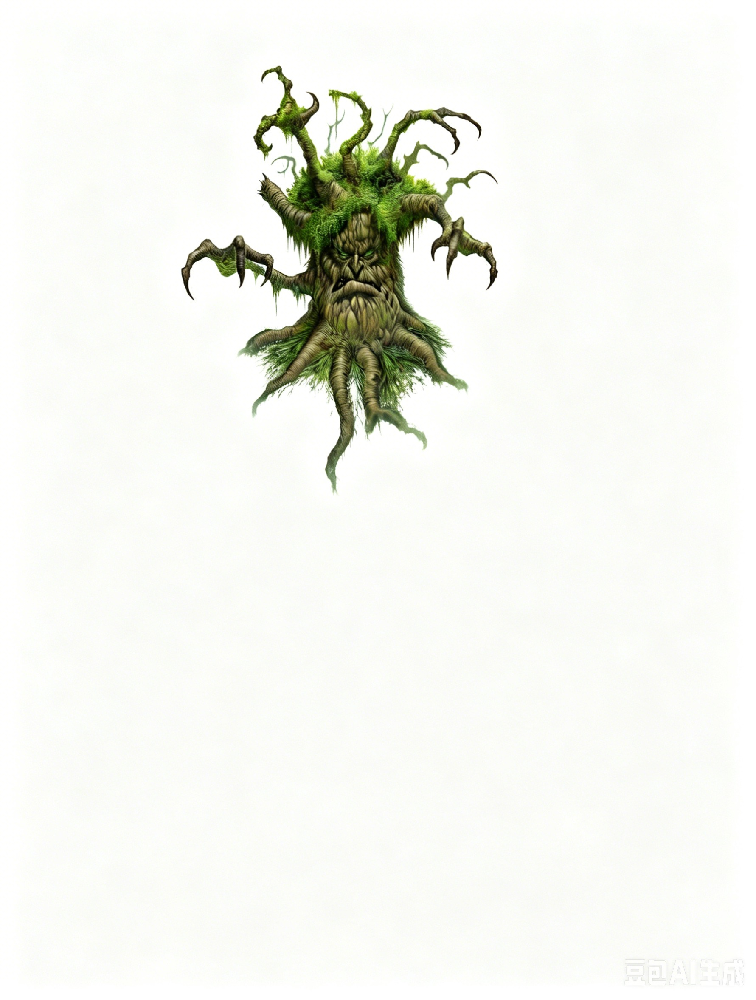

中型植物 | 挑战级数 2你最初以为是扭曲灌木的东西舒展开来，露出一个矮人大小的古老生物。覆盖着地衣的树皮从它的身体上剥落，短小的叶丛从它的肢体上冒出。它深陷的裂缝中透出警惕的目光，狠狠地盯着你。
老树精 ―― 通常混乱中立。
植物交谈 Speak with Plants (Su)：如同施展植物交谈术；随意使用；施法者等级 4。
强化穿林步 Improved Woodland Stride (Ex)：老树精可以以正常速度穿越任何形式的灌木丛（如荆棘、带刺植物和过度生长区域），且不会受到伤害或其他障碍。此外，受到魔法操控的荆棘、带刺植物或过度生长区域也不会妨碍它的行动或对其产生影响。
纠缠 Entangle (Su)：如同纠缠术；随意使用；DC 15；施法者等级 4。该能力影响老树精周围 60 英尺半径的区域，持续 1 分钟。豁免 DC 基于体质调整值。
老树精是一种矮小而古老的植物生物，与树人有亲缘关系，但它们生活在树线的边缘、贫瘠的土地上。尽管它们并非邪恶，但却是苦涩、残酷的生物，与严酷的环境融为一体。它们缓慢地穿越荒凉的地貌，警惕地观察入侵者并将其驱逐。
策略与战术：老树精通常单独行动或以小群体（称为"树林"）形式巡逻。它们的伪装极佳，即使是经验丰富的观察者也难以将它们与普通矮树或灌木区分开来，甚至一侧的苔藓分布都与真实的古树相似。它们喜欢静待时机，观察局势，然后出其不意地发动攻击。
单独作战：如果敌人看起来不够危险，老树精会使用其纠缠能力将其束缚，然后用肢体挥击被困的敌人。即使敌人未被束缚，其减速效果也使敌人难以逃离缓慢的老树精。如果敌人是远程攻击者，老树精会依靠厚重的树皮抵御箭矢，而弹弓几乎无法对它造成威胁。必要时，它会选择撤退。面对使用火焰的敌人，老树精会优先尝试束缚他们，并寻找其他同伴来协助应对威胁。
群体作战：多个老树精组成的"树林"会协同作战，对抗更强大的敌人。它们会使用智能战术，例如提供夹击加值或互相协助攻击或防御。它们会优先攻击那些使用斩击武器或火焰的敌人。如果处于劣势，它们会撤退，将敌人困在障碍密布的地形中，并躲藏在其他灌木丛中，直到脱离敌人视线。
老树精通常不太喜欢合作，也很少主动发起战斗。通常的遭遇是一株独居的老树精，但它们偶尔会聚集成群体行动。
双株组合 (EL 4)：两株老树精守卫着一处温泉，这泉水在极地寒冷中全年流动。旅人常常停留在此，这使其成为埋伏的理想地点。这些老树精会用纠缠能力减缓敌人的行动，然后集中攻击一个目标，试图抓住对手，将其拖入水中溺毙。
生态：老树精生活在高海拔地区或冻原边缘，在树木因环境恶劣而变得矮小如盆景的地方。它们的寿命非常长，但从未生长到比灌木更大。幼年的老树精几乎无法辨认，因为它们看起来与周围的地被植物或浆果灌木别无二致。这使它们容易受到草食动物的威胁，但通过与周围植物的交流，它们能够时刻保持警觉，发现潜在的威胁。绝大多数动物在尝试咬食这些植物后，会被反击吓跑――毕竟，被绿色植被"打脸"可不是常见的经历！成熟的老树精会保护幼苗生长的区域，因为这些幼苗数量稀少，极其珍贵。
在经历了百年之后，老树精便能独立生活，并寻找一块覆盖有地衣的岩地或沼泽作为栖息地。在这一阶段，它们已具备繁殖能力。然而，由于数量稀少，找到伴侣通常是一场漫长而困难的旅程。雌雄老树精通过询问当地植物来寻找潜在的伴侣。一旦两株老树精相遇并发现彼此契合，它们会形成终生的伴侣关系。繁殖过程充满了复杂的仪式，最终产生一颗种子，由父母将其种植在附近。新生的后代会在此扎根生长（除非受到威胁被迫迁移），并在接下来的百年甚至两百年中留在这一地区。
老树精通常浅浅地扎根在选定的地方，通过植物的方式汲取水分和有限的养分。分解的尸体能提供额外的养分，因此老树精并不介意猎杀不小心的生物来补充饮食。入侵者的尸体最终都会被用来肥沃土壤。
尽管老树精本身对植物食者来说并不美味，但在严酷的冬季，即使是这种苦涩的"口粮"也可能吸引动物。然而，普通野兽一般都会被它们赶走，而残暴的怪物却有时会吞噬它们。它们特别容易受到叉角马（《Frostburn》113页）的威胁，这种生物天生适应坚硬的食物。
环境：老树精最常见于寒冷的平原，但寒冷的亚高山地带也能发现它们的身影。它们缓慢地在其栖息地内移动，偶尔会漂入其他类型的地形，但通常不会停留太久。
典型外貌特征：老树精的高度很少超过矮人，通常为 4 到 5 英尺，体重约为 150 磅。雌雄体型相差无几，都每两年长出类似松果的结构。雄性松果带有宽大的鳍状结构，生长在其"面部"下方的关节处；雌性松果则非常小，围绕着树干分布。此外，雌雄的叶片分布也有所不同，雄性叶丛主要集中在背部，而雌性叶片则均匀分布全身。它们的叶片坚韧而有蜡质，一年四季保持绿色。
阵营：老树精通常是混乱中立的，这种态度源于它们独居的观察生活。有些成为德鲁伊的个体更可能是绝对中立、中立善良或中立邪恶。那些特别消极的老树精在极端高龄时可能会逐渐转变为中立邪恶或混乱邪恶的行为。
老树精将自己视为抵抗"文明"侵入荒原的最后孤独防线。他们认为树人是过于柔弱的远亲，这些亲戚将他们遗弃在了这片不毛之地。他们对大多数其他种族持冷漠甚至敌视态度，但对德鲁伊则更为愿意交流。与他们共享栖息环境的乐霜精（详见《Frostburn》第38页）被老树精视为志同道合的伙伴（尽管温和的乐霜精可能并不认同这一点）。
总体来说，宗教在老树精的生活中并不重要。那些具有精神信仰的老树精通常遵循德鲁伊或萨满教的传统，但也有少数向冰冷冬季的神�o祷告。老树精德鲁伊比他们的同胞更具冒险精神，更可能与乐霜精或其他德鲁伊建立合作关系。
生活艰难，生命寒冷，这些是老树精存在的基本信条，也深刻影响了他们的世界观和价值体系。他们对任何无法适应恶劣环境的人（包括自己的族人）都毫无耐心。他们的后代很快就会学会如何保护自己免受掠食者的伤害。
每一株老树精都如同一个独立的国家。他们并不需要中央政府，这种阴郁的族群数量稀少且分布广泛。通常在一片小树林中，最年长者自然会成为权威人物。而那些成为德鲁伊的老树精通常也会担任领导者角色，因为他们往往也是族群中最年长的。
典型宝藏：老树精通常拥有与其挑战等级相符的标准财宝，约 600 金币。这些财宝通常包括他们击败敌人时收集的装备和金币。这些物品可能部分被树皮覆盖，逐渐融入老树精的外貌。
拥有职业等级的老树精：老树精的德鲁伊等级与其种族生命骰叠加，用于计算其纠缠术和植物交谈能力的效果。种族生命骰不会与德鲁伊等级叠加用于施法能力的计算。
成为牧师的老树精通常崇拜 Telchur（详见《Frostburn》第43页），其领域包括：气、混乱、寒冷（*）、力量、隆冬（*）。其偏好的武器是短矛或短弓。
* 领域详见《Frostburn》第85页。
等级调整：+3。
老树精栖息于寒冷、荒凉的荒原，如纳费尔 (Narfell) 和冰风谷 (Icewind Dale)，或高山的高坡地带。有时，竖琴手组织的成员会特意前往拜访这些孤独的守卫者，探讨其领地内邪恶生物的活动。一些 Uthgardt 野蛮人与老树精生活在同一地区，并对这些古老的树人表达敬意。祖树部落的一小支分支专注于保护老树精。
拥有 自然知识 (Knowledge: Nature) 技能的角色可以对老树精有更多了解。角色通过成功的技能检定可以获得以下信息，包括低难度检定的内容：
DC 12：这种生物是老树精，一种与树人有亲缘关系的极地植物生物。这一结果揭示了所有植物特性。
DC 17：老树精的坚韧外皮难以被穿刺或钝击武器穿透。
DC 22：老树精可以让附近的植物活化，用来纠缠敌人。
DC 27：当被活化的植物纠缠敌人时，老树精能够毫无阻碍地穿越这些区域。